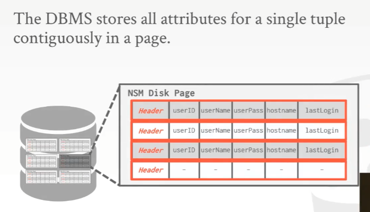

注: 本文首发我的 b 站专栏文章CMU 15-445/645-笔记-04-数据库存储-part2
注意：这节课是 3-1 的延续
课程目标
日志结构（Log-Structured）的文件组织

主要是存储如何创建 tuple 以及修改 tuple 的相关信息，比如增删改查的操作
这些记录会以文本文件的形式保存，读起来就像是日志记录一样
为什么要这么做？
循序写入/读取/访问的速度要远比随机访问快得多。如果使用 Slotted Pages 的方式，假设要更新 10 个在不同 page 上的 tuple，那就必须在这 10 个 page 上来写入并更新这些 tuple。但如果使用的是 Log-Structured 文件组织这种形式，把这要更新的 10 个 tuple 的语句写在单个 page 上，就一次性能搞定全部了。
Log-Structured 文件组织这种想法也并不新颖，它是在 1980 年代末，1990 年代初出现的。虽然出现的晚，但最近十年这种技术开始起飞。比如在 HDFS 或者 S3 中，这些分布式文件系统就只支持这种追加的方式，即没办法进行随机更新，能做的就是追加记录
但这种方式有明显缺陷，是什么呢？
是 读取
如果现在要去读取某个 tuple，那么就需要回头去在日志中查找这个 tuple
有几种方式可以加快访问的速度
建立索引，可以通过索引跳到日志中特定的 offset 处，就能找到对应的数据
定期压缩 log
重新遍历一遍 log，对里面的内容进行筛选压缩，而对于每个 tuple，只需要一条记录即可
把这种
变成这种
有以下几个数据库用这种方式
- HBase
- Cassandra
- LevelDB
RocksDB
有许多分布式数据库系统使用了这种技术，并且是用 Go 写的。比如 CockroachDB 使用了 RocksDB 存储管理器作为底层，它的分布式执行层都是用 Go 来写，但在它内部使用的 RocksDB 用的是 C++。而 RocksDB 是 Meta 的，但它是基于 LevelDB 改进后的产物，而 LevelDB 是 G 家的。Meta 把 LevelDB 拿过来，首先做的事情就是干掉 mmap，然后才有的 RocksDB。
LevelDB 至今还活着，但很多人用的还是 RocksDB
Tuple 存储
例如 Integer 和 Float 这些固定长度的东西，在大部分数据库系统中其表达方式和 C/C++ 使用的方式是一样的
因为这通常是由 IEEE-754（二进制浮点数算数标准） 标准所定义的
IEEE-754 是一种行业标准，用来表示数字和 CPU 的规范，比如 Integer 和 Float 应该是多少个字节，是大端对齐还是小端对齐之类的
对于那些可变长度的类型，例如 VARCHAR/VARBINARY/TEXT/BLOB 来说，通常情况下它们里面会有一个 header，这个 header 会有 保存的 blob 的长度，如果是一个很大的值，那后面还会跟一个 checksum。紧接着跟着的就是字节序列了。
对于时间类型来讲，大多数数据库系统通常会去保存从 1970 年 1 月 1 日起的秒数/毫秒数/微秒数来处理时间。本质上这些数据库系统保存的依然是完整的时间戳。
对于定点数字（Fixed Point Value）来说，非常依赖于 C++ 或者底层硬件所提供给我们的数字
Float, Real/Double 或者可变精度的数字，这些都是 CPU 或者 C++ 给的不精确的数字
而对可变精度数字执行操作的速度要比任意精度数字快得多，因为 CPU 拥有能高效执行这些操作的指令。比如，CPU 通过 1 条指令就能对俩浮点数进行加减运算，但处理定点数字时就需要一大堆指令来处理了
虽然处理可变精度数字相对快，但这里也存在舍入误差，因为在 IEEE-754 标准中，并没有任何办法能够将十进制数 准确 地存入硬件，也只能使用一个大概的数字
一个浮点数精度的例子，假如我想要的时小数点后 20 位的数，那么用 GCC 编译出来是啥结果呢？
因为硬件只能近似逼近或者说模拟 0.3 这个浮点数，没有办法真正精确地去表示这个数
所以为了解决这个舍入误差的问题，就需要固定精度的数字了
可以把值作为 VARCHAR 类型（不是 string）来储存，然后通过一些元数据来表示，这里是小数点，那里是精度范围，接着另一边是舍入信息，这些东西都放在 tuple 里面，同时也是该 tuple 字节数组的一部分
Postgres 一段源码

当声明一个 Fixed point DECIMAL 时，Postgres 就像上图中那个方式来存这个 struct，这里面包含了关于 DECIMAL 的一些额外的元数据
用红色标注出来的部分，其实是一个用来表示 REAL 类型值的字符串
那么为什么操作 DECIMAL 会慢呢？下面是一段做加法的源码
可以看到，这并不是用一条指令就能完成的，它需要一系列的 switch 条件才能完成，比如说要判断它的正负、是不是 0，或者两个数字是否相等。但是如果是 REAL 或者是一个浮点数做加法时，CPU 只需要一条指令就能完成。
所以如果不想因为精度问题丢失数据，那就用 Fixed Point DECIMAL
大数值
如果想要保存的东西因为体积太大而无法放在一个单一 page 上，该怎么办？
有两种方式用 overflow page 来解决
在这个例子中，如果这个 tuple 中的 c 对应的 data 太大了，那么就通过一个指针来指向保存 c 对应的 data 的那个 overflow page如果 overflow page 也放不下这个数据，那么同样可以通过 overflow 指针来指向某些其他 page 来解决这个问题
正常情况下，overflow page 是无法通过常规手段进行操作的，所以要尽量避免
在 Postgres 中，大部分时候，这些 overflow page 是 只读，或者几乎都用来读，很少往上面去写东西。所以大部分对 overflow page 的优化，都受到和常规 data page 或者 tuple page 一样的保护
用 外部存储 来解决
基本思路是，不会把该属性的数据保存在 tuple 内部，而是往这个里面保存一个指针或者是一个文件路径，它们指向存放该数据的本地磁盘/网络存储/外部存储设备的位置
有些系统对此进行了支持，例如 Oracle，DB2，以及巨硬
对于 DBMS 来讲，它无法对外部存储文件中的内容做修改
- 没有持久化保护
没有事务保护
有一篇 10 前年的论文，由很多在微软工作的数据库专家撰写的，叫 《TO BLOB or Not TO BLOB: Large Object Storage in a Database or a Filesystem?》
BLOB 的意思是二进制大对象，是可变长度的二进制数据
在 2000 年代，任何小于 256KB 的东西，我们都倾向于将它保存在一个 overflow page 上，任何大于 256KB 的，我们都倾向于将他保存在外部存储文件中
之前有个做 SQLite 相关工作的来 CMU 搞了一场讲座，他表示对许多手机应用来讲，最好将图像的缩略图存储在数据库系统中，尽管某些图片的大小甚至有 1MB，因为从数据库中读取这些记录会更快，因为它们已经将文件打开，就不用去根据指针在文件系统中查找文件，然后使用 f.open 来打开文件获取数据了
但是，如果将一大堆视频文件保存在高端的企业磁盘上，那就真的是浪费钱了。所以解决办法是把这些文件弄成块 （chuck），保存在 HDFS 或者使用更便宜的网络存储服务– AWS 的 S3 上面，那么数据库系统就不会因为为了维护这堆文件而负担过重了。
系统 Catalogs
系统 catalogs 是关于数据库相关信息的元数据，它里面存放了表名，索引等等
很多数据库系统都会将它们的 catalog 用另一张表来保存
大部分数据库系统会通过 STANDARD INFORMATION_SCHEMA 这个 API 把 catalog 暴露出来，因为 1980 年代每个这种 API 每个数据库给的都不一样，所以后面出了 ANSI 标准使得每个数据库系统都必须支持这个 API
访问表 Schema
访问当前数据库的所有表访问当前数据库某张表的 schema

schema，当在数据库中做查询以及构建索引时，就会用到它
Wikipedia 简化版本表例子
workload
在数据库系统中，我们所关心的 workload 主要有两类OLTP
On-line Transaction Processing，即联机事务处理
思路是，从外部世界拿到新数据之后，将它们放入到数据库系统中，而在查询/更新时，数据库只会去读取/更新一小部分数据，然后不断地重复类似的操作
比如 Amazon 的 storefront，当你在网站上买东西的时候，就可以当作是对应用程序的 OLTP。购物网站会大量地进行添加商品、结账、更新账户信息等操作，但是对于顾客个人来说，只需要查询/更新他自己的那一部分数据。
OLAP
On-line Analytical Processing，即联机分析处理
当数据库已经从 OLTP 应用程序中收集到一大堆数据时，现在要分析这堆数据，并从中推断出新的信息（数据科学？？）。同时 aka 商务智能（business intelligence）/决策支持（dicision support）/大数据（big data）
在 OLAP 的情况下，数据库不会去更新数据，但是会读取大量的数据，要做大量的 join 操作
一张 workload characterization 图
从图中可以看出
- OLTP 擅长简单的查询，但是会做大量的写操作
- OLAP 会做大量的读操作，但它们会更复杂
HTAP（Hybrid Transaction Analytical Processing）混合事务分析处理，综合 OLTP 和 OLAP 的产物
对于传统的 NoSQL 系统，mongoDB、Cassandra 以及 Redis 来讲，它们应该属于靠近 OLTP 那块，即主要往数据库里面塞入新数据
在某些分析方面，mongoDB 对此做了部分支持
而 MySQL 和 PostgreSQL 支持一些属于 OLAP 类型的查询
但这些比起列存储数据库来讲，就没那么高效了
NoSQL 是在 2000 年末出现的，有很多公司做这个，比如 G 家就为此投入了大量的资金，它们推出了 HBase、 BigTable 以及 Hadoop。它们不会去执行 SQL，也不会进行事务处理，更不会进行 join 操作，但是这就是它们能拓展的原因。
最终这帮人构建出了 NoSQL 数据库系统，比如 mongoDB 和 Cassandra，它们都试着遵循某种设计模式，以此来支持现代的软件 2.0 或 web 2.0 应用。
Hadoop 具备 OLAP 能力，而像 BigTable，Cassandra，mongoDB 具备的则是 OLTP 能力
后来人们也想在 NoSQL 系统上执行 SQL，进行事务处理，进行 join 操作，NewSQL 因此应运而生
Wiki 上 NewSQL 相关信息的第一个系统 H-Store 就是老师开发的，因为这个页面是老师写的（笑
搞 SQL 那帮人一开始表示它们不会去使用 SQL，认为 SQL 太垃圾了，除了 mongoDB 支持某些 SQL 的变体，其他的系统都不支持 SQL，但后面他们又改口说 NoSQL 的意思是 Not only SQL。。。（草，这算是技术圈的风水轮流转吗）
人们在 1970/80 以及 2000 年代都觉得 SQL 是一种糟糕的东西，但它一直都没有退出历史舞台。
数据存储模型
那么什么样的存储模型才能更有效地支持这些 workload 呢？
n-ary 存储模型（N-Ary Storage Model NSM）

以行（Row）的形式展示的 tuple，这被称为 n-ary 存储模型
基本思路是，将单个 tuple 中的所有属性取出，并将它们连续地存储在 page 中
一个 OLTP 的想法，因为要去访问的数据量在粒度上要足够的小，即一次取一行数据，而这一行数据会按照定义连续存储，这样就能访问到单个实体，拿到对应的信息。如果它是一行数据，就会非常高效，因为只需要跳到那个 page，找到那个数据就完事了。

让一个 tuple 的所有数据连续地放在一起是读取数据时最有效的方式，因为用索引 index 就可以直接查了，而对于插入操作也是如此
但为什么行储存是一个糟糕的想法呢？比如如下的一个查询例子

在上图的查询中，不得不去读取整个 page，而在非易失性存储设备中，它是一个基于阻塞的 API（EXTRACT ？？？），没办法直接得到这些数据，需要拿到整个 page 之后才行。现在为了执行这条查询，就有了这些我们根本不会去访问的列，但为了得到实际需要的两列（hostname 和 lastLogin），不得不从磁盘中拿到它们（整个 page）并将它们放到内存里（这里的意思应该指内存里面多了 Useless Data）。这是个 bad idea，因为它浪费了硬件的性能。
- 优势
- 访问整个 tuple 时，插入/更新/删除数据都很快
- 利于查询整个 tuple 的属性
- 劣势
- 但如果要进行一些分析型的查询以及做些 OLAP 的工作，并且要去扫描整张表大部分的内容时，it will suck。因为这需要往内存塞一大堆不需要的数据
- 优势
列存储模型（Decomposition Storage Model DSM）
在列存储模型中，并不会将单个 tuple 的全部属性放在单个 page 中，而是将横跨所有的 tuple 中单个属性的所有的值保存在单个 page 中。即把单个列的所有的值连续的保存在一起。
那么要做 OLAP 的话，只需要读取给定表中部分属性的集合就好了
把 tuple 属性拆开来，一个 page 就放一种 tuple 属性
对于前面的查找的情况，现在就只需要扫描两个 pages 即可，而不是扫描整个 pages
注意: 这里图的颜色配反了，下面的图应该要黑蓝换一下
顺便列存储也有利于数据的压缩（如果有重复的值存在），因为每个 page 下的属性的类型都是一致的，那么说明它所占空间每一块对于 page 存储的数据来说都是均匀的，大小一致，而行存储则可能往往相反
那么应该怎样从一个 page 中找到一个匹配项呢
有 2 种方案，但通常会选择第一种
- 使用固定长度的 offset（推荐）
offset * 每个属性的 size 就能找到位置，比如前面说过的 row ID，page ID 和 slot number 就是这么做的 对于列中的每个值都保存一个主键或者时标识符（不推荐）
通过 (key + value) * offset 的形式去查找，但是本身存储开销很大，因为得为每个值用额外的 32/64 bit 的空间来保存它们的 id，非常浪费优势
- 进行 OLAP 查询时，可降低垃圾 I/O 的数量
- 利于压缩数据，这样在查询上性能就会更好
劣势
读取单个 tuple 时候就会很慢，因为需要把不同列的数据拼在一起，这样才能得到一个完整的 tuple，然而对于行储存直接拿就行，同样的对 tuple 进行更新/删除，代价也更高同样的，列存储也不是什么新想法
瑞士军方当时构建了一个叫做 Cantor 的系统，在 1970 年代，因为他们使用了别的语言来写的，所以这玩意儿没被叫做数据库，但它实际上就是个列存储数据库。
- 1980 年代，有篇 paper 提到了列存储模型，同时也提到了更多细节，比如短格式（short format）、存储模型的意义
- Sybase IQ 是 Sybase 公司推出的专门为数据仓库设计的关系型数据库，IQ 的架构与大多数关系型数据库不同，有用于支持大量并发用户的即时查询的特殊设计。可能是最著名的第一个实现列存储的商用数据库。这是一个内存型列存储数据库，Sybase 把它作为普通的行存储数据库系统的加速器发布，这样他们就可以进行 HTAP 处理并具备同步的能力，但它并没有被广泛采用，因为它被当作行存储数据库的插件而不是作为一个独立的产品来卖
- 到了 2000 年代，列存储数据库才真正起飞，Vertica 由 Michael Stonebraker 创立，他之前参与过 PostgreSQL 和 Ingres 这些数据库的开发。之后他的公司被 HP 收购，VectorWise 是 MonetDB （MonetDB 是一个开源的面向列的数据库管理系统，它被设计用来为较大规模数据，比如几百万行和数百列级别的数据库表，提供高性能查询的支持） 的内存版。MonetDB 以前是欧洲的一个学术项目，但现在到处都在用它，它是 2000
年代出现的第一个列存储数据库系统 - 之后列存储很快就出名了，因为人们发现这是构建用于数据分析型数据库系统的正确方式
- 使用固定长度的 offset（推荐）
那么有没有结合行存储和列存储方式的数据库系统呢？有的，比如 MySQL，在创建表时，可以告诉它用行存储，在创建另一张表时可以告诉它用列存储，所以本质上来说 MySQL 有俩独立的存储管理器，以及俩独立的执行引擎来处理，所以这种就被成为混合数据库系统。虽然有些数据库对于 OLTP 和 OLAP 都支持，但真正牛逼飞起的还没几个。。。
基本上，人们在前端 OLTP 系统中所运行的是 MySQL、mongoDB 或者其他数据库系统，然后你把数据传输给后端数据仓库（back-end data warehouse），然后基本上，当这堆数据不再需要的时候，就可以把 OLTP 这块老的数据给修剪掉了。这可以通过 MySQL + Vertica 这俩独立数据库做到。或者就使用单个混合型数据库，Splice machine 可以做，MySQL 也能做
结论
简单规则，make life easier and better。